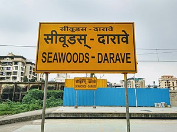

Vashi
Vashi is a node in Navi Mumbai, Maharashtra, across the Thane Creek of the Arabian Sea on the outskirts of city of Mumbai.[
Belapur
BELAPUR
The Central Business District of Belapur (C.B.D Belapur) is a node of Navi Mumbai. The Navi Mumbai Municipal Corporation is headquartered in Belapur.
Seawoods
Seawoods
Seawoods–Darave is a newly developed railway station on the Harbour line of the Mumbai Suburban Railway in the Nerul node.